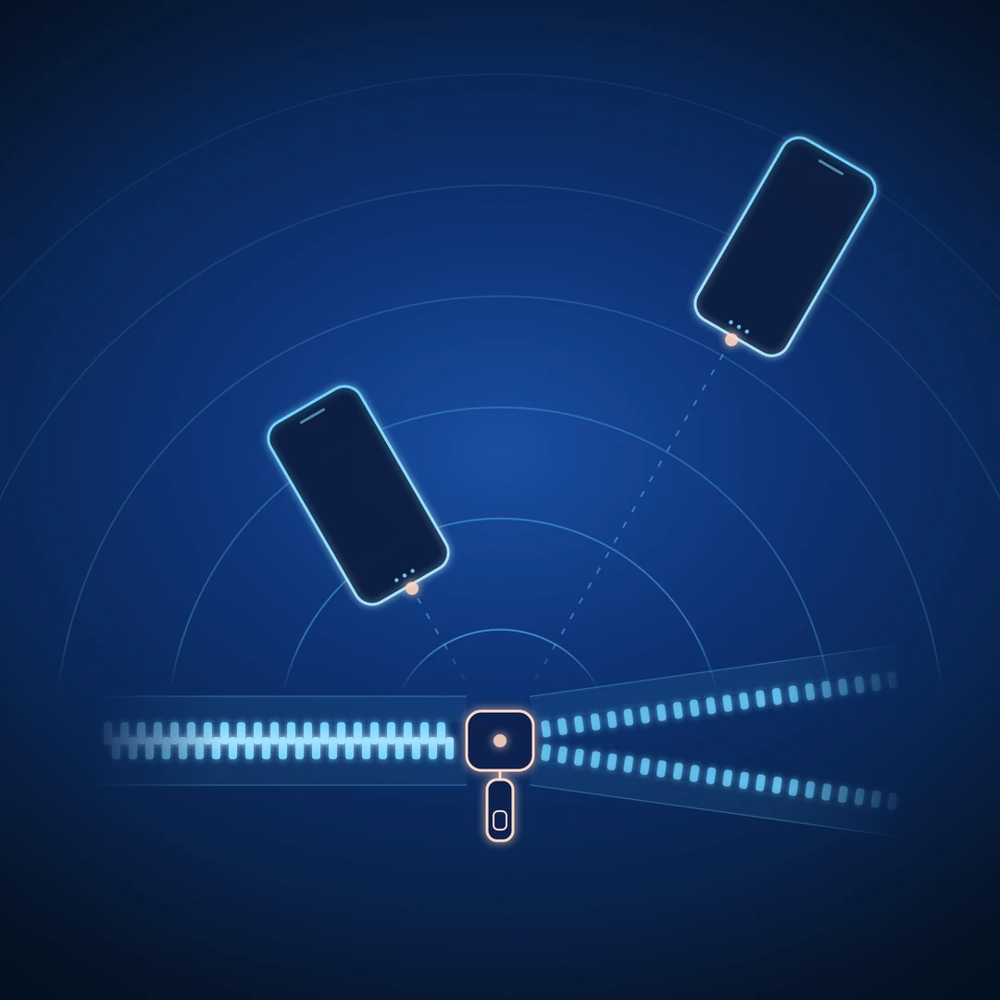

How to Record Everyday Sounds with Your Phone

A zipper can give you several useful sounds: the click of the pull tab, a rough sweep along the teeth, and a small tap when the movement stops. Record a few pulls back to back, though, and those details can become tangled with fabric rustle and the sound of your hand returning.
Later, when you want one clean sweep, there is no obvious place where it begins or ends.
The way you record determines which choices remain available when you edit. A second perspective, a pause before resetting, or a few consistent repetitions can give you material that is easier to shape.
In How to Hear Everyday Sounds as Sound Design Material, we explored what to listen for. Here, we use a bag's zipper to look at how to capture it.
1. Record two perspectives
Record the zipper up close, then move the phone farther away and repeat the same action.
Up close, listen for the small mechanical details. Farther away, notice how the zipper sits with the movement of the bag and the sound of the room. The balance will depend on the object, the space, and your recorder.
Keep both versions if they offer useful differences. A detailed recording might suit a short accent; a more distant version might fit a whole movement on screen.
Turning down a close recording cannot recreate a more distant perspective, because distance changes how much room you hear relative to the zipper.
2. Separate the action from its reset
Pull the zipper in one direction, pause, then return it.
Opening and closing may both be useful. Leaving a gap makes it easier to choose either direction, rearrange them, or use them as separate sounds. If you immediately reverse the movement, the end of one gesture can run into the beginning of the next.
Listen for the quieter actions too: releasing the tab, moving your hand back, and repositioning the bag. Give them their own space when you want the zipper movement available on its own.
You can also record a continuous sequence deliberately. Keep it as another option when the rhythm of the whole action interests you.
3. Capture the edges before deciding where to cut
Start recording a few seconds before the first pull. Tapping the screen or settling your grip can make noise; let that pass before beginning the action.
At the end, keep recording until the tab's tap and fabric movement have settled, then stop. You can shorten a complete ending later; an ending you did not record cannot be recovered from that take.
Record a few seconds of the room on its own, with the phone in the same position. This background sound can help bridge a gap between edits without an abrupt drop to silence.
4. Make variations you can compare
Keep the phone in one position and try three performances: a short tug, a slow full pull, and a fast full pull. Use the same start and end points for the two full pulls so you can compare the effect of speed.
Treat the takes from one phone position as a group, and start a new group when you move the phone.
Keep the setup consistent within each group: settle your grip, leave the microphone openings clear, and avoid rubbing the phone while performing. If it rests on a surface, check for unwanted vibration reaching it. Turn on Do Not Disturb, and check which alerts it still lets through.
You now have a short gesture and two longer movements to choose from, with fewer accidental changes in the recording perspective. Repeat a promising version if you want alternatives with a similar character.
5. Check the choices you have captured
Listen back before putting the bag away, preferably through headphones.
Can you find a complete gesture with a clear beginning and ending? Did the two positions give you a useful difference? Do you have a few related takes worth keeping?
Listen for distortion and handling noise as well. If a take sounds unexpectedly harsh or broken up, try again with a gentler action or more distance. Check input level if your recorder offers that control.
Some apps automatically adjust levels or suppress noise; if the background swells during pauses or quiet tails disappear, check whether those features can be reduced or switched off.
Name each group by the difference you intended, such as "zipper-close" and "zipper-distant."
A five-minute recording exercise
Record three performances from each of two positions. Leave a pause around every gesture.
Compare the six takes at roughly similar listening volumes. Choose two to keep and note why: perhaps one exposes a small click, while another captures a smoother movement. If they sound much the same, try a more noticeable change in position or performance.
Then use the selection and editing steps in A Sound Is Not a Sample Yet to prepare one for a project.
The short version
- Record different perspectives so you can choose the one that fits.
- Separate each action from the movements needed to reset it.
- Capture complete beginnings and endings.
- Keep the setup consistent while varying the performance.
- Check what you have while another take is still possible.
Pick one object nearby, record a few variations, and take one sound into a project while it is still fresh in your ears.